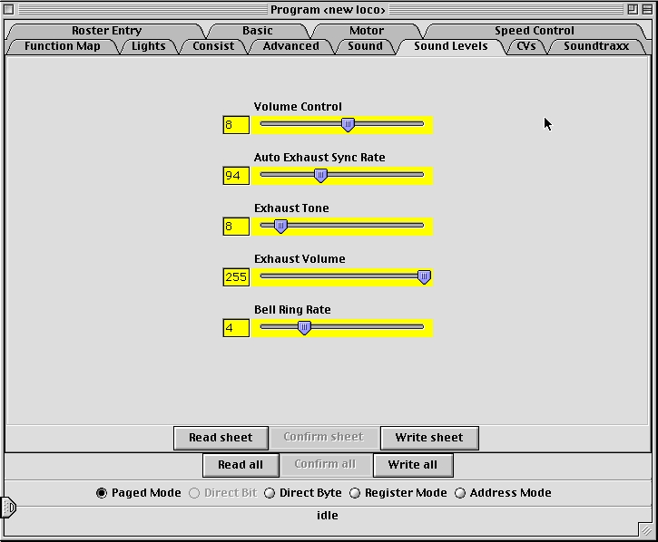

DecoderPro Comprehensive Programmer
Sound Levels Pane
Here are the CVs for the relative volume levels and timing nuances
of the sound decoder. Again, this is an example of one implementation.
See your decoder documentation and the specific decoder programmer for
details applicable to your equipment. Above all, don't be afraid to play
with these settings and those in the previous pane until you get sound
you like. It's much easier to do here than it is to try to program these
using a throttle!

Site hosted by: